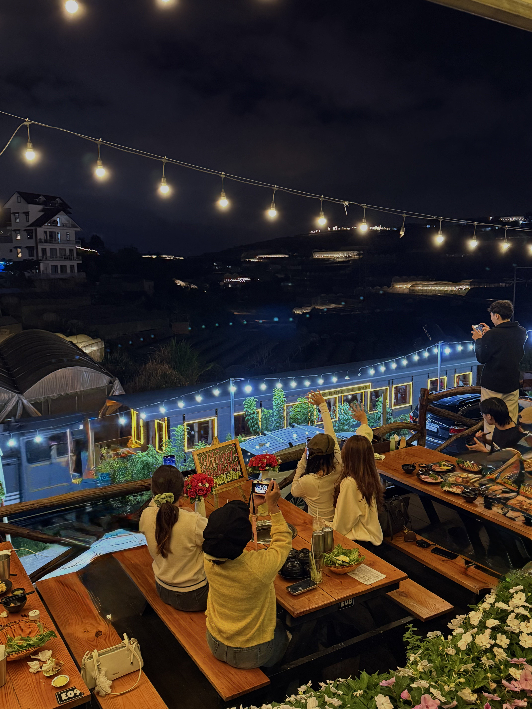

Ga Trại Mát — Điểm đến nostalgic Đà Lạt
Ga Trại Mát là ga cuối tuyến đường sắt cổ Đà Lạt - Trại Mát, cách trung tâm 7km. Đoàn tàu hơi nước cổ kính chạy giữa vườn hoa và nhà lồng — tạo nên cảnh quan độc đáo. Khu vực xung quanh ga có nhiều quán ăn, café view đẹp.
Ăn nướng ngắm xe lửa — Trải nghiệm chỉ có ở Đà Lạt
Tưởng tượng: bạn đang nướng thịt thơm phức, bất chợt tiếng còi tàu vang lên, đoàn xe lửa cổ từ từ chạy ngang. Khoảnh khắc "chill" không đâu có — chỉ tại Đà Lạt. Đây là trải nghiệm được du khách đánh giá cao nhất khi đến phố núi.
Trạm Dừng Chill — Quán nướng view xe lửa số 1
Trạm Dừng Chill tại 111 Huỳnh Tấn Phát, P11 nằm ngay trên tuyến đường sắt Đà Lạt - Trại Mát. Từ quán, bạn nhìn thẳng xuống đường ray và ngắm xe lửa chạy ngang mỗi ngày. Không quán nướng nào ở Đà Lạt có view này.

Lịch trình gợi ý: Ga Trại Mát + Nướng BBQ
14:00: Tham quan ga Trại Mát, chụp ảnh check-in. 15:00: Đi xe máy 5 phút đến Trạm Dừng Chill. 16:00-18:00: Nướng BBQ ngắm hoàng hôn + xe lửa. 18:30+: Ngắm biển đèn nhà lồng, tiếp tục nướng.
Đặt bàn view xe lửa
Bàn view đường ray có giới hạn. Đặt bàn trước và ghi chú muốn view xe lửa. Hotline: 0989.765.070. Quán mở 15:00 - 23:00.